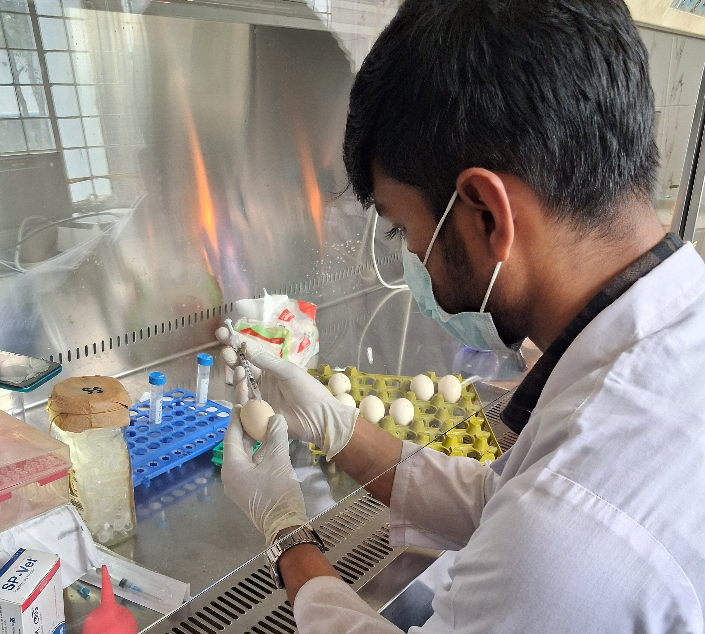

Virology Lab

Embryonated Egg Inoculation & Passage
Performing sterile virus inoculation in embryonated chicken eggs inside a biosafety cabinet for serial viral adaptation and CAM pock lesion assessment.
Molecular characterization of poultry and livestock viruses from field outbreaks (Newcastle disease virus, lumpy skin disease virus), vaccine efficacy testing through challenge studies, and host antibody and immune responses in poultry and ruminants.

Molecular characterization of poultry and livestock viruses from field outbreaks—including Newcastle disease virus (NDV) and lumpy skin disease virus (LSDV)—with sequence and phylogenetic analysis of key viral genes.
Evaluating vaccine protection against circulating field strains tested through controlled challenge studies, clinical monitoring, and survival analysis.
Investigating host antibody kinetics and humoral immune responses to natural infection and vaccination in poultry and ruminants.
| Objective | To detect lumpy skin disease virus in cattle from Mymensingh District and characterize the circulating virus at the molecular level. |
|---|---|
| Sample Collection | 28 skin nodule samples collected from suspected LSDV-affected cattle across three upazilas: Mymensingh Sadar (11), Ishwarganj (8), and Trishal (9). |
| Laboratory Work | DNA extraction, PCR, and agarose gel electrophoresis targeting the P32 gene (192 bp product). Adapted the virus in embryonated chicken eggs over seven serial passages, observing the chorioallantoic membrane (CAM) for characteristic pock lesions, and confirmed viral growth by PCR. |
| Data Analysis | Phylogenetic and nucleotide sequence analysis using Linux and MEGA-12; protein sequence and mutation analysis in CLC. |
| Key Findings | The P32 gene (192 bp) was detected by PCR in 18 of 28 samples (64.3%). The virus successfully adapted to chicken embryos with pock lesions on the CAM and PCR-confirmed growth across seven passages. Two partial sequences were submitted to NCBI GenBank: |
| Contribution | Carried out all laboratory work and bioinformatic data analysis independently, including the seven egg passages, PCR, and sequence analysis. |
| Objective | To compare the fusion (F) gene of a genotype XIII field isolate with the vaccine strain and evaluate how effectively the vaccine protects chickens against the circulating field isolate. |
|---|---|
| Methods | F gene sequence analysis against the vaccine strain using MEGA-12, CLC, MAFFT, and iTOL. Vaccine efficacy was assessed by post-challenge survival over 14 days, growth curve analysis, and serum antibody titers measured with the ID NDV ELISA kit (NDVS-CV), with S/P ratios and titers calculated in Excel. |
| Contribution | Performed sequence analysis and data recording, conducted regular clinical monitoring of birds, managed vaccination and challenge procedures, ran ELISA assays, and calculated antibody titers. |
| Target Gene | VP1 capsid gene of Duck Hepatitis Virus |
|---|---|
| Scope | Molecular sequence and phylogenetic analysis of the VP1 gene of duck viral hepatitis isolates to investigate evolutionary relationships. |

Performing sterile virus inoculation in embryonated chicken eggs inside a biosafety cabinet for serial viral adaptation and CAM pock lesion assessment.

Viral DNA extraction and amplification of the 192 bp P32 gene fragment from bovine skin nodule samples.

Conducting clinical observation, health recording, and field sample collection across livestock farms in Mymensingh District.

Dispensing reagents into 96-well microplates using the ID NDV ELISA kit (NDVS-CV) to quantify post-vaccination serum antibody titers and S/P ratios.

Receiving 3rd position award in the scientific poster presentation competition during World Veterinary Day at Bangladesh Agricultural University (2024).

Precision dispensing of chromogenic substrate across serum dilution wells prior to optical density reading and titer calculation.
| Area | What I Have Done Myself | Proficiency |
|---|---|---|
| Virology | Virus inoculation and seven serial passages in embryonated chicken eggs; chorioallantoic membrane (CAM) observation for pock lesions; CAM and allantoic fluid collection | Advanced |
| Molecular Biology | DNA extraction, PCR/RT-PCR (P32 gene), gel electrophoresis and SDS-PAGE; two partial sequences submitted to GenBank (PX254913.1, PX254914.1) | Advanced |
| Microbiology & Lab Practice | Media preparation, streaking, staining and microscopy; aseptic technique and biosafety practice | Advanced |
| Immunological & Serological Assays | ELISA for Newcastle disease antibodies using the ID NDV kit (NDVS-CV), including S/P ratio and titer calculation in Excel | Intermediate |
| Bioinformatics & Statistics | F gene sequence analysis against a vaccine strain (MEGA-12, CLC, MAFFT, iTOL); phylogenetic analysis (MEGA-12); protein sequence and mutation analysis (CLC); survival curves and ELISA data analysis in Excel; growth curve analysis using Linux, R/RStudio, SPSS | Intermediate |
| Vaccine Studies | Vaccination (BCRDV, RDV), challenge and regular monitoring of birds from day-old to six months for vaccine efficacy testing (Newcastle disease virus) | Basic |